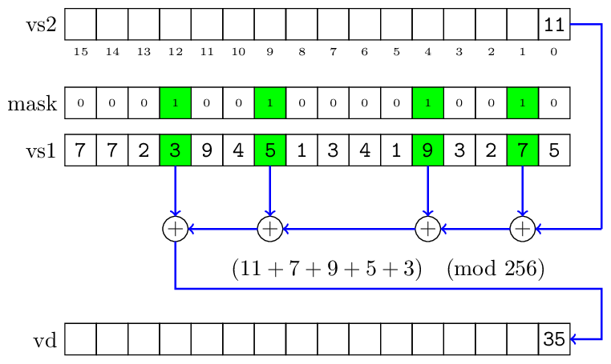
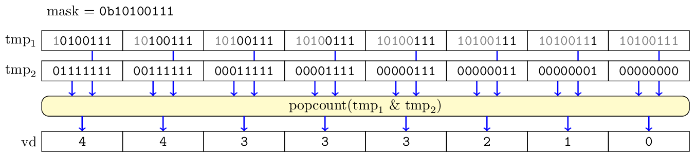

| Author: | Wojciech Muła |
|---|---|
| Added on: | 2024-11-09 |
Contents
The goal of this text is to provide an overview of RISC-V Vector extension (RVV), and compare — when applicable — with widespread SIMD vector instruction sets: SSE, AVX, AVX-512, ARM Neon and SVE.
The RISC-V architecture defines four basic modes (32-bit, 32-bit for embedded systems, 64-bit, 128-bit) and several extensions. For instance, the support for single precision floating-point numbers is added by the F extension.
The vector extension is quite a huge addition. It adds 302 instructions plus four highly configurable load & store operations. The RVV instructions can be split into three groups:
When a CPU does not support floating-point instructions, it still may provide the integer subset.
RVV introduces 32 vector registers v0, ..., v31, a concept of mask (similar to AVX-512), and nine control registers.
Unlike other SIMD ISAs, RVV does not explicitly define size of vector register. It is an implementation parameter (called VLEN): the size has to be a power of two, but not greater than 216 bits. Likewise, the maximum vector element size is an implementation parameter (called ELEN, also a power of two and not less than 8 bits). For example, a 32-bit CPU might not support vectors of 64-bit values.
But generally, we may expect that a decent 64-bit CPU would support elements having 8, 16, 32 or 64-bit, interpreted as integers or floats.
In this section we are discussing generic concepts of RVV.
The specification is given three-fold:
In the RVV integer operations accept 8-, 16-, 32- and 64-bit numbers, both signed and unsigned. This makes the ISA very regular — the given operation is supported for all possible vector element types. A bright example are bit shifts, that in other SIMD ISAs usually exist for a limited sub-set of integer types. In particular, SSE, AVX and AVX-512 have no support for 8-bit shifts.
Likewise, floating-point operations can be done on single precision (32 bits), double precision (64 bits), as well as half-precision numbers (16 bits).
While integer instructions are mandatory, floating point support depends on core ISA extensions present in the given core (the F for single precision, D for double precision, and Zfh for half-precision).
A unique trait of RVV is encoding of instructions. An operation opcode does not encode the bit-width of a vector element. The element width is a global state. It is called selected element width (SEW), and the term SEW is used throughout the RVV specification.
The SEW is set by the dedicated instruction vsetvl. The setting is applied to all subsequent instructions, until another vsetvl. (Fast forward: vsetvl sets also other aspects of vector processing.)
Let's look at the dissasembled section of a simple program. The third parameter of vsetvli is SEW: e8 means 8 bits, e16 — 16 bits, e32 — 32 bits, and e64 — 64 bits. The integer add operation (vadd.vv) is encoded exactly in the same way, as 0x02110057.
0000000000000000 <.text>: # add vectors of 8-bit integers 0: 0c007057 vsetvli zero,zero,e8,m1,ta,ma 4: 02110057 vadd.vv v0,v1,v2 # add vectors of 16-bit integers 8: 0c807057 vsetvli zero,zero,e16,m1,ta,ma c: 02110057 vadd.vv v0,v1,v2 # add vectors of 32-bit integers 10: 0d007057 vsetvli zero,zero,e32,m1,ta,ma 14: 02110057 vadd.vv v0,v1,v2 # add vectors of 64-bit integers 18: 0d807057 vsetvli zero,zero,e64,m1,ta,ma 1c: 02110057 vadd.vv v0,v1,v2
This is completely different from the existing ISAs, that use separate encoding for each supported vector element width.
However, in cases when we need to operate on different elements widths within a single procedure, we need to switch modes, which makes things a little more complex.
It forces a compiler to track the current vector settings; the reality is that compilers targeting RVV have a separate pass inserting vsetvli.
The vector engine can be setup (using the mentioned vsetvl instruction) to use a group of registers instead of a single register. A similar solution exists in ARM SIMD ISAs.
A group may contain 2, 4 or 8 registers; the group size is called LMUL. The combination of LMUL and VLEN yields the parameter VLENMAX.
When LMUL > 1, then a program is allowed to use vector register having index of multiply of LMUL. For instance, if we use LMUL = 8, then the allowed registers are only v0, v8, v16 and v24, using anything else results in a trap (AKA exception).
┌───┬───┬───┬───┬───┬───┬───┬───┬───┬───┬───┬───┬───┬───┬───┬───┬───┬───┬───┬───┬───┬───┬───┬───┬───┬───┬───┬───┬───┬───┬───┬───┐
LMUL=1 │ v0│ v1│ v2│ v3│ v4│ v5│ v6│ v7│ v8│ v9│v10│v11│v12│v13│v14│v15│v16│v17│v18│v19│v20│v21│v22│v23│v24│v25│v26│v27│v28│v29│v30│v31│
└───┴───┴───┴───┴───┴───┴───┴───┴───┴───┴───┴───┴───┴───┴───┴───┴───┴───┴───┴───┴───┴───┴───┴───┴───┴───┴───┴───┴───┴───┴───┴───┘
┌───────┬───────┬───────┬───────┬───────┬───────┬───────┬───────┬───────┬───────┬───────┬───────┬───────┬───────┬───────┬───────┐
LMUL=2 │ v0 │ v2 │ v4 │ v6 │ v8 │ v10 │ v12 │ v14 │ v16 │ v18 │ v20 │ v22 │ v24 │ v26 │ v28 │ v30 │
└───────┴───────┴───────┴───────┴───────┴───────┴───────┴───────┴───────┴───────┴───────┴───────┴───────┴───────┴───────┴───────┘
┌───────────────┬───────────────┬───────────────┬───────────────┬───────────────┬───────────────┬───────────────┬───────────────┐
LMUL=4 │ v0 │ v4 │ v8 │ v12 │ v16 │ v20 │ v24 │ v28 │
└───────────────┴───────────────┴───────────────┴───────────────┴───────────────┴───────────────┴───────────────┴───────────────┘
┌───────────────────────────────┬───────────────────────────────┬───────────────────────────────┬───────────────────────────────┐
LMUL=8 │ v0 │ v8 │ v16 │ v24 │
└───────────────────────────────┴───────────────────────────────┴───────────────────────────────┴───────────────────────────────┘
Without digging much into assembly details, this code:
vsetvli x0, x0, e8, m1, ta, ma ; ^^ ; m1 - use a single register ; perform 8 vector additions vadd.vv v24, v0, v8 vadd.vv v25, v1, v9 vadd.vv v26, v2, v10 vadd.vv v27, v3, v11 vadd.vv v28, v4, v12 vadd.vv v29, v5, v13 vadd.vv v30, v6, v14 vadd.vv v31, v7, v15
can be compacted into:
vsetvli x0, x0, e8, m8, ta, ma ; ^^ ; m8 - use groups of 8 registers ; perform 8 vector additions vadd.vv v24, v0, v8
It is also possible to limit instructions to operate only on a fraction of register — LMUL can be 1/2, 1/4 or 1/8. Similar solution is used for floating-point operations in SSE & AVX: an instruction operates either on the whole vector register (like ADDPS) or only on the first element (like ADDSS).
It's important to note that not all fractions are valid. For example, when VLEN = 128 and SEW = 64, then a single register can hold only two elements. Thus, it's impossible to use its 1/4 or 1/8.
When the instruction vsetvli sets something which is not sane in the given implementation, then the bit vill of the control register vtype is set; then any subsequent vector operation results in a trap (AKA exception).
Let's start with the problem we have with current SIMD ISAs. The majority of (auto)vectorization of code is done on loops. When we have a loop like that:
for (size_t i=0; i < n; i += 1) { C[i] = A[i] + B[i]; }
and we know that the target's ISA registers can hold K elements, the loop can be rewritten as:
size_t i = 0; // main loop (process input in K-element chunks) for (/**/; i < n; i += K) { a = load K elements from A[i..i+K] b = load K elements from B[i..i+K] c = vector a + b store K elements from c to C[i..i+K] } // tail (process 0 to K-1 elements) for (/**/; i < n; i += 1) { C[i] = A[i] + B[i]; }
Because K is fixed, we have to add an extra processing of "a tail" to handle cases when n is not a multiple of K. This requires duplication of the body's loop. In our example the body is just a simple addition, but often things are way more complex.
With AVX512 it might be solved in a more elegant way, by using the explicit mask applied for all operations. For the main loop the mask is full, just for the last iteration we limit the mask to the tail elements. While it's nicer, we still have some kind of tail processing, but present at a different layer of user code.
The RVV solves that particular problem at the architecture level, allowing to tell the vector engine how many elements we're going to process. This number is called application vector length (AVL), and in our example it's the n parameter.
A programmer feeds vsetvli with that number. The RVV implementation responses with the actual number of elements it will process. The response is called vector length (VL), it's a value from 0 to VLMAX. The VLMAX is the total number of elements, which is calculated as: register width (VLEN) times register multiplier (LMUL) divided by the element width (SEW).
For example VLEN = 128 bits, LMUL = 4 and SEW = 32 bits, then the maximum length is VLMAX = 128 * 4 / 32 = 16 elements.
Let's see how the above loop can coded in plain assembler. It's not complicated, don't worry.
; register t0 holds a pointer to array A ; register t1 holds a pointer to array B ; register t2 holds a pointer to array C ; register a0 has value n (the initial number of elements) loop: vsetvli a1, a0, e8, m1, ta, ma ; ^^ ^^ ; | | ; | +- (input) [AVL] the number of remaining elements ; +----- (result) [VL] actual vector length: value in range 0..VLMAX-1 vle8.v v0, (t0) ; load `a1` elements into v0 vle8.v v1, (t1) ; load `a1` elements into v1 vadd.vv v2, v0, v1 ; add v0 and v1 - process only `a1` head elements vse8.v v2, (t2) ; store `a1` elements from v2 ; update pointers: ptr += a1 add t0, t0, a1 add t1, t0, a1 add t2, t0, a1 ; update the counter: counter -= a1 sub a0, a0, a1 bnez a0, loop ; repeat if a0 != 0
Taking this from another angle, the vector length acts as an implicit mask.
The vector length is applied for almost all instructions. Only a few vector instructions do not obey this settings, but it's for purpose (for example, loading & storing whole registers).
A quite obvious complement to setting vector length would be setting the first element of vector. Thus our code would process any subvector!
And indeed, there is the vstart control register which is... weird. Although it is exposed to the user code, it's indented to use in exception handlers. A CPU has to set vstart to the index of the faulting element, for instance when accessing unmapped memory while loading multiple elements.
A user code may set the vstart, but the outcome is implementation-defined:
For the sake of completeness: some instructions — mostly related to masks --- explicitly disallow vstart other than zero.
Similarly to AVX-512, RVV uses a concept of mask — a mask is a bit vector that determines which elements of vector are being processed. Most vector instructions can be masked.
A mask is also a result of comparisons, and multi-word arithmetic instructions.
However, unlike AVX-512, the RVV does not have a separate register file for masks. A mask is interpreted as the VL lowest bits of a vector register. In practice it means that we have to sacrifice some vector registers solely for masks.
Another caveat is that only the register v0 can be used for masking instruction. (It's important when we write in plain assembler, compilers for ages been dealing with architecturally fixed registers.)
A natural consequence of having masks is providing a subset of instructions that operate on mask. That are logical instructions (and, or, xor), but also an instruction that returns the index of the first set element and an instruction that yields number of set bits (population count). AVX-512 supports only logical instructions, a mask register has to be moved to a generic purpose register in order to do something more advanced with mask bits.
Before we move forward, we need to formalize a little how a vector is interpreted:
When an instruction is not masked, all its body elements are active. When an instruction is masked, then the elements of body can be either active or inactive, depending on the mask bits.
We can decide how prestart/tail & inactive elements are being updated in the destination register. There are two policies: undisturbed and agnostic.
The policy undistrubed keeps the previous value. This is generally slower, because a CPU has to read the destination register and then do an implicit merge operation.
The policy agnostic may not keep the previous values, filling elements with bit 1. Not all elements have be filled in that way — it's perfectly valid to get a non-deterministic outcome. With the agnostic policy we cannot assume anything about non-active elements, thus we choose that policy iff we really don't care about the non-active elements.
These policies are set independently for prestart/tail and inactive elements. In most cases we'll have tail agnostic policy, and undistrubed masked elements.
Side note: setting all ones instead of zeroing non-active elements looks odd. The specification justifies this choice:
The agnostic policy was added to accommodate machines with vector register renaming. With an undisturbed policy, all elements would have to be read from the old physical destination vector register to be copied into the new physical destination vector register.
I'm not buying it. Both AVX-512 and SVE fill with zeros the inactive elements and there's no performance penalty because of that.
As it was said, RVV does not define the size of vector register. The vector register size can be read from control register vlenb, which is the width given in bytes.
A portable program should not assume anything about vlenb, in particular it's minimum value.
Caveat: in-register gathers, known as shuffle or permutation on other architectures, are not fully portable.
Most RVV instructions have three arguments:
The majority of instructions update vd with the result of some binary operation on sources (like addition, multiplication):
vd := vs1 op vs2
Only multiply-add instructions additionally read vd:
vd := (vs1 * vs2) + vd
A useful feature of RVV is that for many instructions the source #1 can be also:
Conceptually, the scalar argument is splat (broadcast) before applying a vector operation. For example following code adds 3 to each element of vector v7:
vadd.vi v5, v7, 3 ; ^^ ^ ; use immediate li t0, 3 vadd.vx v5, v7, t0 ; ^^ ; use integer register (t0)
The intrinsics functions do not expose immediate variants, their scalar argument will be properly interpreted by a compiler. For the sake of completeness the above assembler code with C intrinisic function.
const size_t vl = __riscv_vsetvl_e32m1(n); vuint32m1_t a = __riscv_vadd_vx_e32m1(b, 3, vl);
RVV offers several load/store operations.
First of all, we can load/store whole registers, regardless of the vector length. These instructions are meant more for bare data movement, like registers spilling or saving registers on a stack.
There are load/stores the operate on vector length elements.
for i in 0..vl loop index := i * SEW vd[i] = load_sew_bits(base_address + index) endloop
There are gathers/scatter, that load indices from another vector register.
for i in 0..vl loop
index := vs1[i] * SEW
vd[i] = load_sew_bits(base_address + index)
end loop
There are specialised gather/scatter, that load elements with given spacing.
for i in 0..vl loop
index := i * SEW * multiplier
vd[i] = load_sew_bits(base_address + index)
end loop
Note that the for regular load/stores, mentioned earlier, multiplier = 1.
It's possible to set multiplier to zero — then effectively such instruction perform broadcast of a single element from memory into a vector register.
It's also possible to set negative multiplier, if somebody really wants.
There are load/stores that performs transposition, loading elements at the given offset into separate registers. This is something ARM Neon supports. A classical example is splitting RGB images (3 x 8 bit) into separate channels, something like that:
for i in 0..vl loop
index := i * SEW * number-of-registers (=3)
v0[i] = load_sew_bits(base_address + index + 0 * SEW)
v1[i] = load_sew_bits(base_address + index + 1 * SEW)
v2[i] = load_sew_bits(base_address + index + 2 * SEW)
end loop
There are loads that allow to mask accessing unmapped memory. This feature is also present in SVE.
The ABI for RVV is simple: all registers may be freely clobbered.
Taking this from the perspective of shared libs, it's not ideal. Functions are accessed via bare calls, without inlining. Any utility-level function has to preserve the modified RVV registers, thus RVV-intensive code should be rather huge (called less often). Forget about short helper functions.
Intrinsics functions are well-defined by a separate spec. That's really good, kudos for that!
There is a nice online viewer
This section is not meant to enumerate all instructions, it lists things the author found interesting.
In one of the previous sections we mentioned that when a procedure uses different element widths, we're forced to switch the mode using vsetvl instruction. That's quite often in integer-intensitive code. For example, if we're summing vectors of bytes, we need to cast uint8 into uint16 to avoid overflow.
The RVV comes with many variants of instructions that implicitly do widening (upcasting) and narrowing (downcasting), without changing the mode. Widening means that we operate on vectors with SEW, but the result is written as 2*SEW. In the case of narrowing, we're usually have SEW inputs and 1/n*SEW outputs.
For example instruction vwaddu.vv adds two vectors of width SEW, and then casts the addition results into 2*SEW unsigned numbers. The instruction vaddu.wv adds a vector of 2*SEW and a vector of SEW: it first casts SEW vector into 2*SEW, and then performs additions of 2*SEW unsigneds, yielding a vector of 2*SEW numbers.
The other SIMD ISAs do not provide anything similar, they have dedicated instructions to upcast or downcast explicitly.
The Intel documentation coined terms "vertical" and "horizontal" to distinguish between vector instructions that process corresponding elements of arguments (vertical) and instructions that process adjacent elements of arguments (horizontal).
The keyword here is adjacent: Intel ISAs provides way to process pairs of adjacent elements, a good instance is PMADDWD instruction.
The RVV made a leap: it's possible to apply the given operation to a vector and get a scalar result. It's called reduction; reduction is defined for floats or integers.
For floats we have three operations: sum, min and max. Summing may be ordered or not — the latter means that a CPU is free to add elements in any order, but presumably faster.
For integers we have: sum, min (signed/unsigned), max (signed/unsigned) as well as binary operations: or, and, xor. In the case of summing elements, there are also variants that widen the result, so there's no wrapping on overflow.
Masks are used in the same way, regardless if they are applied to integer or floating-point instructions.
Mask can be build from other masks using several boolean functions, like and, or, xor; there are also unusual nand, nor and xnor.
It's possible to construct a new mask from the existing one, that takes into account the first bit set:
They work in the following way:
mask = = 0101_01101_1010_0000
^
first bit set
set-only-first = 0000_00000_0010_0000
set-before-first = 0000_00000_0001_1111
set-including-first = 0000_00000_0011_1111
We can query the mask, getting result in a generic-purpose register:
The instruction viota is quite unusual, and its main purpose is implementation of vector decompress operation. The instruction takes a mask and produces a vector, where each element of vector is the number of bits in mask that are set before the i-th position.
The following C-like code shows the idea.
void iota(mask, vector) { for (i=0; i < VL; i++) { before = (1 << i) - 1 vector[i] = population_count(mask & before) } }
The most striking difference with other SIMD ISAs is that RVV supports integer division as well as reminder. There is support for both signed and unsigned numbers.
It is possible to add or subtract multi-word numbers. A similar feature was present in AltiVec.
Addition/Subtract accepts three arguments: two numbers and carry/borrow from the previous addition. There's a separate instruction for producing carry/borrow bits.
There are only three operations available: and, or and xor. It cannot be compared with AVX-512 with its ternary logic instruction. But not having "and-not" operation or "bit-merge" ((x and c) or (y and not c)) seems an obvious omission.
Mulitply-add/subtract are well known in the world of floating-point numbers. Having similar operations for integers is a nice addition, saving a few instructions.
It's possible to slide vector elements by the given offset (in elements). For single-element slides it's possible to shift-in a scalar register content.
It's similar to vector alignments from SSE/AVX, but more generic.